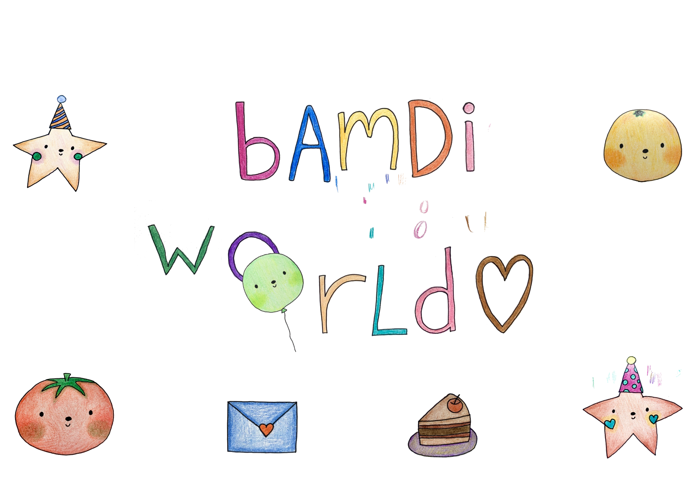
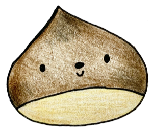
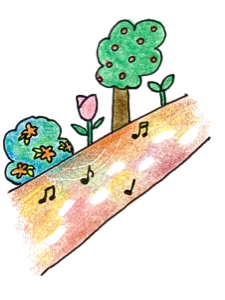
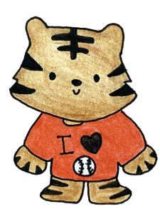
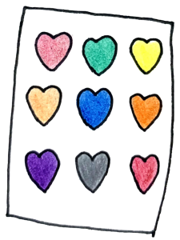
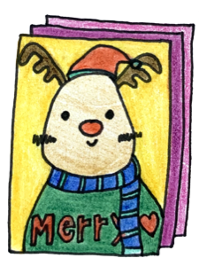
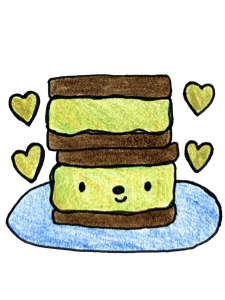
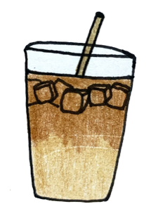

About
Bamdi = bam (밤, chestnut) + di (from Gandhi)
a nickname from my brother-in-law for my love of chestnuts and shared personality type with Mahatma Gandhi
밤디: 군밤 밤, 간디 디
밤을 사랑하고 간디와 성격유형이 같아서 형부가 지어준 이름
Seoul, Shanghai, Dallas, Daejeon
Currently in Seoul
Favorites

roasted chestnuts
walks
KIA tigers
stickers
postcards
dubai chocolate-inspired
desserts
caffe pascucci’s heyoat
- 군밤
- 산책
- 최강기아
- 스티커
- 엽서
- 두바이 초콜릿 디저트
- 파스쿠찌 헤이오트
Projects
Projects I've worked on will be gathered here, one by one.
- Star FriendsTwo stars in party hats
- Fruit ShopA rosy-cheeked tangerine and tomato
- Sweet LetterA heart-sealed letter and a slice of cake
그동안 해온 프로젝트들을 하나씩 모아둘 예정이에요.
- 별 친구들고깔모자를 쓴 별 두 개
- 과일 가게볼이 발그레한 귤과 토마토
- 달콤한 편지하트 편지와 케이크 한 조각